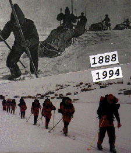

Dr Fridtjof Nansen, a norwegian, was the first man to cross Greenland`s enormous inland ice (1888). The years 1893-96 tried to reach the North Pole. During a 5 months long ski-expedition from his ship Fram he reached 86·N, the farthest north any man had been at that time. In 1919-30 Nansen was the chief delegate for Norway to The League of Nations (UN). And in 1922 he receive the Nobel Peace Price for his work saving millions of Russians from starvation, and for helping prisoners of war from East-Europe after WW 1.
From a speech Fridtjof Nansen held for students at St. Andrew University, England (1926).
".. It is our perpetual yearning to overcome difficulties and dangers, to see the hidden things, to penetrate into regions outside our beaten track; it is call of the unknown.."".. and the Wild is calling - let us go!"
